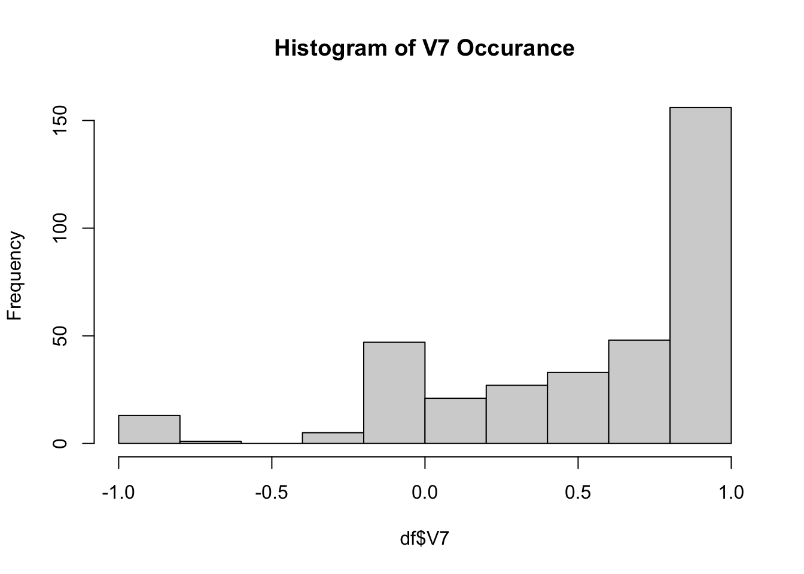
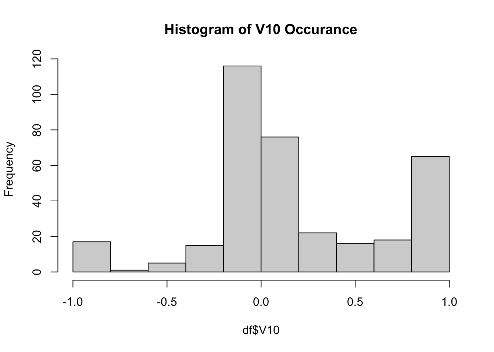
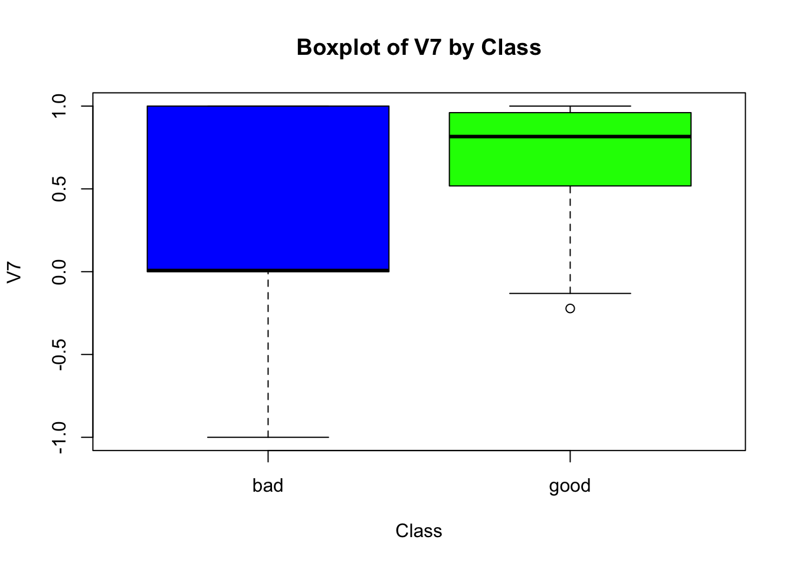
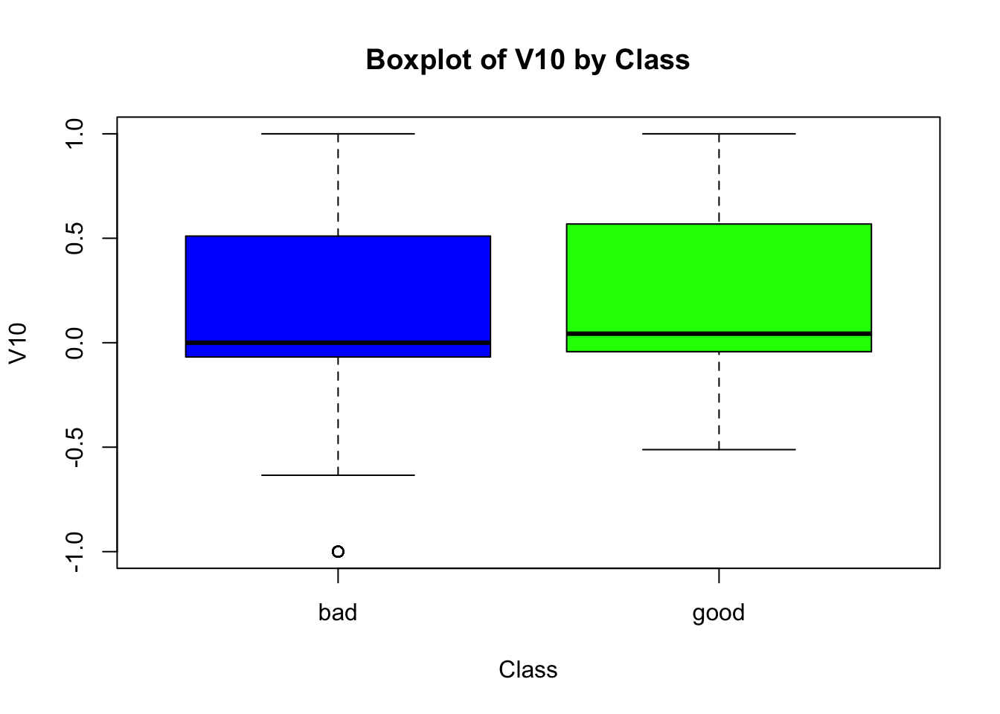

The following Question 1 is in regards to this table:
Obs
X1
X2
X3
Y
1
1
2
-1
Blue
2
1
0
3
Blue
3
0
3
0
Red
4
0
2
-1
Red
5
2
0
-1
Blue
6
1
4
1
Red
Question 1a:
The nearest neighbor to any K = 1 observation is the observation itself so in this case Blue with a misclassification rate of 0%, and this would be the case for each of the other observations.
Question 1b:
Where K = 3, there is a misclassification of 1/6.
Obs
X1
X2
X3
Y
1
Blue
Red
Red
Red
2
Blue
Blue
Red
Blue
3
Red
Red
Blue
Red
4
Red
Blue
Red
Red
5
Blue
Blue
Red
Blue
6
Red
Red
Blue
Red
Question 1c:
Question 1 c i:
Because our point of interest is (0,0,0) the distance of each observation from our point of interest is simply the magnitude of the observation.
Obs
Distance from (0,0,0)
1
\(\sqrt{6}\)
2
\(\sqrt{10}\)
3
3
4
\(\sqrt{5}\)
5
\(\sqrt{5}\)
6
\(\sqrt{18}\)
Question 1 c ii:
For K = 1 the nearest neighbor prediction could be Red or Blue as they are equidistant from the initial point.
Question 1 c iii:
For K = 3 the nearest neighbor prediction would be Blue as the majority of points nearest to our point of interest are Blue.
Question 1 c iv:
For K = 5 the nearest neighbor prediction would be Blue because the majority of points nearest to our point of interest are Blue.
Question 2:
Question 2 a:
The validation set approach splits the data set into two parts.
Training set which is often seen as 70% of the data set.
Validation set, which is used to evaluate the models performance which is often roughly 30% of the data set.
A disadvantage to the validation set approach is Data inefficiency, not as much data is used to train a model that adopts this approach.
Question 2 b:
Leave one out cross validation works as follows:
Treat that observation as the validation set.
Train the model on the remaining (n-1) observations, hence leave one out.
Evaluate the model’s performance on the held-out observation.
One of the advantages of LOOCV is that because more data is used, there is lower variance.
Question 2 c:
The main disadvantage of LOOCV that I have seen in this HW is the amount of time for computer. I think on EXTREMLY LARGE data sets, compute time will be long.
Question 2 d:
Both validation set approach and LOOCV can be applied to any supervised learning algorithm, not just k-Nearest Neighbors. Like, linear regression.
df <- Ionosphere###About the data: 351 Observations and 34 Independent Variables(Removed one)###Last column in the data is categorical variable called Class: good/baddf <-subset(df, select =-V2) #Removed V2 bc all 0'sstr(df)
#Here are some graphical summaries of the Ionosphere datahist(df$V7, main ="Histogram of V7 Occurance")

hist(df$V10, main ="Histogram of V10 Occurance")

boxplot(V7 ~ Class, data = df, col =c("blue", "green"), main ="Boxplot of V7 by Class")

boxplot(V10 ~ Class, data = df, col =c("blue", "green"), main ="Boxplot of V10 by Class")

#Here are the corresponding numerical summaries summary(df$V7[df$Class =="good"])
Min. 1st Qu. Median Mean 3rd Qu. Max.
-0.2222 0.5178 0.8159 0.7159 0.9603 1.0000
summary(df$V7[df$Class =="bad"])
Min. 1st Qu. Median Mean 3rd Qu. Max.
-1.000000 0.000000 0.007185 0.253984 1.000000 1.000000
summary(df$V10[df$Class =="good"])
Min. 1st Qu. Median Mean 3rd Qu. Max.
-0.51171 -0.04286 0.04317 0.22496 0.56830 1.00000
summary(df$V10[df$Class =="bad"])
Min. 1st Qu. Median Mean 3rd Qu. Max.
-1.00000 -0.06653 0.00000 0.10346 0.50075 1.00000
There is some skewness in the histogram of V7 to the left direction.
As for the box plot of V10 the two plots seem to be roughly identical and this follows its histogram which looks approximately normally distributed.
set.seed(4323)#Data slicingintrainQ3 <-createDataPartition(y = df$Class, p=0.7, list =FALSE)trainingQ3 <-df[intrainQ3,]testingQ3 <- df[-intrainQ3,]#checking to see if our dimensions add up dim(trainingQ3)
k-Nearest Neighbors
351 samples
33 predictor
2 classes: 'bad', 'good'
No pre-processing
Resampling: Cross-Validated (5 fold)
Summary of sample sizes: 281, 280, 281, 281, 281
Resampling results across tuning parameters:
k Accuracy Kappa
1 0.8461569 0.6409977
2 0.8375855 0.6208973
3 0.8375855 0.6155820
4 0.8461167 0.6360559
5 0.8462374 0.6359032
6 0.8348491 0.6049333
7 0.8319920 0.6004563
8 0.8206036 0.5691947
9 0.8320322 0.6002482
10 0.8263179 0.5847849
Accuracy was used to select the optimal model using the largest value.
The final value used for the model was k = 5.
[1] good good good bad good bad good good good good good good good good good
[16] good bad good bad good bad bad good good good good good bad good good
[31] good bad bad bad good good good good bad good good good bad good good
[46] bad good good bad good good bad good bad bad good bad good good bad
[61] good good good good bad good good bad good bad good bad good good good
[76] good good good good good good good good bad good good good good good good
[91] good good good good good good good good good good good good good good
Levels: bad good
Test error fo k = 5 was found to be the best at roughly 15.38% in comparison to k = 7, 16.8% and k = 1, 15.39%.
Confusion Matrix and Statistics
Reference
Prediction bad good
bad 22 2
good 15 65
Accuracy : 0.8365
95% CI : (0.7512, 0.9018)
No Information Rate : 0.6442
P-Value [Acc > NIR] : 1.185e-05
Kappa : 0.613
Mcnemar's Test P-Value : 0.003609
Sensitivity : 0.5946
Specificity : 0.9701
Pos Pred Value : 0.9167
Neg Pred Value : 0.8125
Prevalence : 0.3558
Detection Rate : 0.2115
Detection Prevalence : 0.2308
Balanced Accuracy : 0.7824
'Positive' Class : bad
What is the confusion matrix saying?
There is an 83.65% accuracy in this model.
The model hallucinated 15 bad as good and 2 good as bad, in which this model is better at determining what is good opposed to bad.
Question 4:
#Data initialization and preprocessingdata("Auto")summary(Auto)
mpg cylinders displacement horsepower weight
Min. : 9.00 Min. :3.000 Min. : 68.0 Min. : 46.0 Min. :1613
1st Qu.:17.00 1st Qu.:4.000 1st Qu.:105.0 1st Qu.: 75.0 1st Qu.:2225
Median :22.75 Median :4.000 Median :151.0 Median : 93.5 Median :2804
Mean :23.45 Mean :5.472 Mean :194.4 Mean :104.5 Mean :2978
3rd Qu.:29.00 3rd Qu.:8.000 3rd Qu.:275.8 3rd Qu.:126.0 3rd Qu.:3615
Max. :46.60 Max. :8.000 Max. :455.0 Max. :230.0 Max. :5140
acceleration year origin name
Min. : 8.00 Min. :70.00 Min. :1.000 amc matador : 5
1st Qu.:13.78 1st Qu.:73.00 1st Qu.:1.000 ford pinto : 5
Median :15.50 Median :76.00 Median :1.000 toyota corolla : 5
Mean :15.54 Mean :75.98 Mean :1.577 amc gremlin : 4
3rd Qu.:17.02 3rd Qu.:79.00 3rd Qu.:2.000 amc hornet : 4
Max. :24.80 Max. :82.00 Max. :3.000 chevrolet chevette: 4
(Other) :365
attach(Auto)
The following object is masked from package:ggplot2:
mpg
mpg01 <-ifelse( mpg >median(mpg), yes =1, no =0)newAuto <-data.frame(Auto, mpg01)str(newAuto)
Of the variables in the data set Auto, I found cylinders, weight, displacement, horsepower, acceleration and the age of the car to be among the most influencing of Mpg01.
#Here we standardized the data, since knn works on distance we don't want anything skewed#cbind makes a matrix, apply, applies the scale (standardize) to the columns 2 not the rows 1newAuto <-data.frame(mpg01, apply(cbind(cylinders, weight, displacement, horsepower, acceleration), 2, scale), year)str(newAuto)
'data.frame': 392 obs. of 7 variables:
$ mpg01 : num 0 0 0 0 0 0 0 0 0 0 ...
$ cylinders : num 1.48 1.48 1.48 1.48 1.48 ...
$ weight : num 0.62 0.842 0.54 0.536 0.555 ...
$ displacement: num 1.08 1.49 1.18 1.05 1.03 ...
$ horsepower : num 0.663 1.573 1.183 1.183 0.923 ...
$ acceleration: num -1.28 -1.46 -1.65 -1.28 -1.83 ...
$ year : num 70 70 70 70 70 70 70 70 70 70 ...
#Splitting the data 70:30intrainQ4 <-createDataPartition(y = mpg01, p=0.7, list =FALSE)trainingQ4 <-newAuto[intrainQ4,]testingQ4 <- newAuto[-intrainQ4,]dim(trainingQ4)
k-Nearest Neighbors
392 samples
6 predictor
2 classes: '0', '1'
No pre-processing
Resampling: Cross-Validated (5 fold)
Summary of sample sizes: 314, 313, 314, 313, 314
Resampling results across tuning parameters:
k Accuracy Kappa
1 0.9209672 0.8419133
2 0.9210321 0.8420609
3 0.9260954 0.8522152
4 0.9108731 0.8217583
5 0.9133723 0.8268230
6 0.9159364 0.8319125
7 0.9185329 0.8371063
8 0.9185005 0.8370503
9 0.9236611 0.8473627
10 0.9236611 0.8473529
Accuracy was used to select the optimal model using the largest value.
The final value used for the model was k = 3.
Among the best K-Values, k = 3 was found to have a (1-0.926) 7.4% error rate.
I unfortunately already scaled my data but here is why: Because KNN works on distance, certain variables will have disproportionate weight. We needed to standardize the variables so that the distance between data points is not skewed. So scaling each feature to have a mean of 0 and a standard deviation of 1 should help.
mpg cylinders displacement horsepower weight
Min. : 9.00 Min. :3.000 Min. : 68.0 Min. : 46.0 Min. :1613
1st Qu.:17.00 1st Qu.:4.000 1st Qu.:105.0 1st Qu.: 75.0 1st Qu.:2225
Median :22.75 Median :4.000 Median :151.0 Median : 93.5 Median :2804
Mean :23.45 Mean :5.472 Mean :194.4 Mean :104.5 Mean :2978
3rd Qu.:29.00 3rd Qu.:8.000 3rd Qu.:275.8 3rd Qu.:126.0 3rd Qu.:3615
Max. :46.60 Max. :8.000 Max. :455.0 Max. :230.0 Max. :5140
acceleration year origin name
Min. : 8.00 Min. :70.00 Min. :1.000 amc matador : 5
1st Qu.:13.78 1st Qu.:73.00 1st Qu.:1.000 ford pinto : 5
Median :15.50 Median :76.00 Median :1.000 toyota corolla : 5
Mean :15.54 Mean :75.98 Mean :1.577 amc gremlin : 4
3rd Qu.:17.02 3rd Qu.:79.00 3rd Qu.:2.000 amc hornet : 4
Max. :24.80 Max. :82.00 Max. :3.000 chevrolet chevette: 4
(Other) :365
k-Nearest Neighbors
392 samples
9 predictor
2 classes: '0', '1'
No pre-processing
Resampling: Leave-One-Out Cross-Validation
Summary of sample sizes: 391, 391, 391, 391, 391, 391, ...
Resampling results across tuning parameters:
k Accuracy Kappa
1 0.8698980 0.7397959
2 0.8724490 0.7448980
3 0.8877551 0.7755102
4 0.8801020 0.7602041
5 0.8826531 0.7653061
6 0.8750000 0.7500000
7 0.8724490 0.7448980
8 0.8877551 0.7755102
9 0.8750000 0.7500000
10 0.8673469 0.7346939
Accuracy was used to select the optimal model using the largest value.
The final value used for the model was k = 8.
Before the scaling, the approach towards validation that has proven to be better is a scaled k-cross validation approach. The accuracy of the best performing k values from each approach were ascertain, and k-cross validation prevailed, with a test error rate of (1-.926) = 7.4% in comparison to a non scaled LOOCV test error rate where k = 8 of(1 - .888) 11.2%
k-Nearest Neighbors
392 samples
6 predictor
2 classes: '0', '1'
No pre-processing
Resampling: Leave-One-Out Cross-Validation
Summary of sample sizes: 391, 391, 391, 391, 391, 391, ...
Resampling results across tuning parameters:
k Accuracy Kappa
1 0.9234694 0.8469388
2 0.9081633 0.8163265
3 0.9209184 0.8418367
4 0.9107143 0.8214286
5 0.9132653 0.8265306
6 0.9158163 0.8316327
7 0.9158163 0.8316327
8 0.9234694 0.8469388
9 0.9234694 0.8469388
10 0.9183673 0.8367347
Accuracy was used to select the optimal model using the largest value.
The final value used for the model was k = 9.
After having scaled the data it seems that LOOCV performed better than its un-scaled version with a k value = 9 yielding a test error rate of (1-.9235) 7.7% but exceptionally close to a scaled version of k - cross validation with a difference of approximately 0.3%.
In this case it would be better to do the k - cross validation approach as there is less compute time, as far as trusting which validation approach more, that would also be k-cross validation but it depends on the use case of your machine learning model.
PS: I couldnt figure out how to display the code but prevent evaluation, I am sorry.